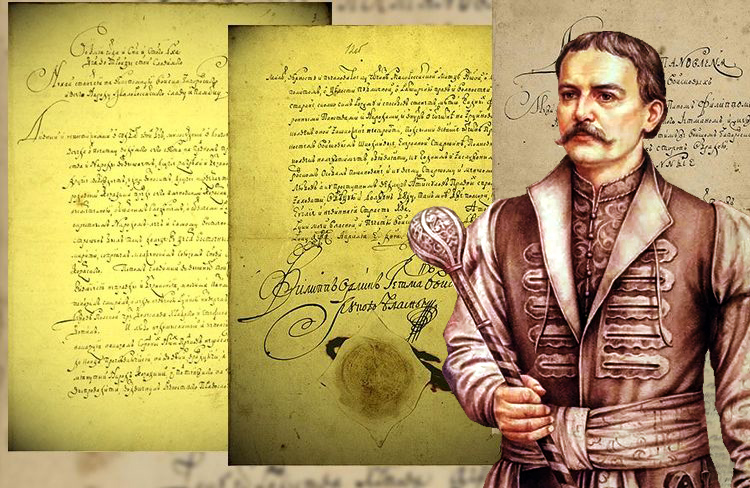
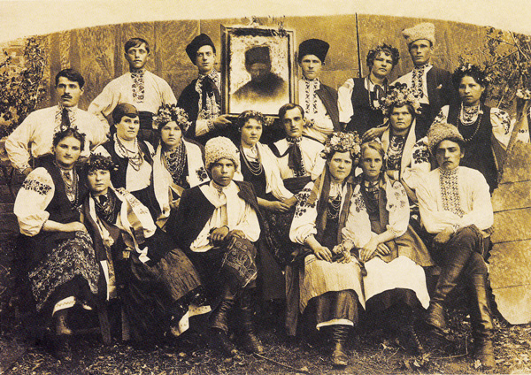
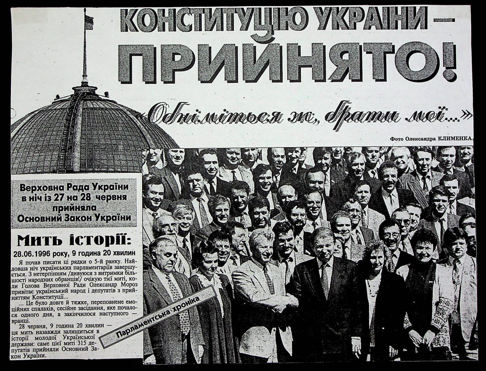
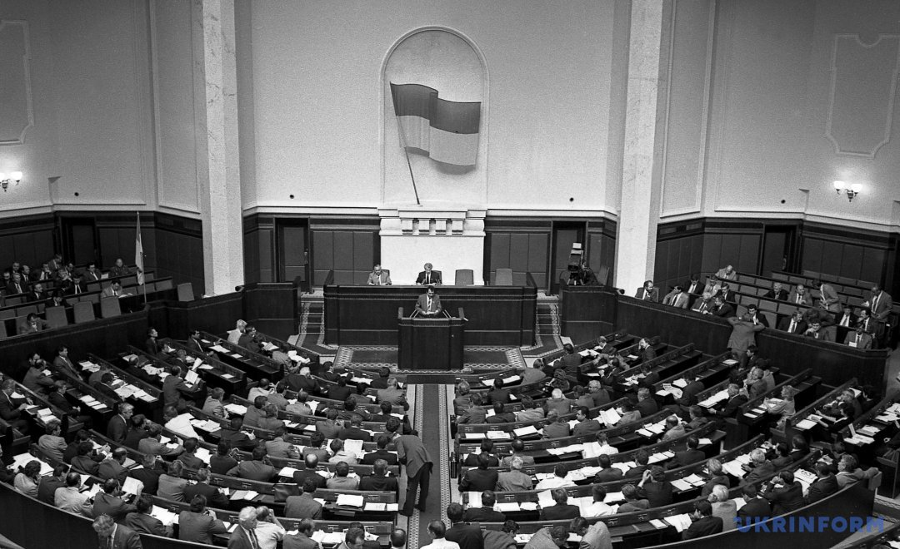

Початок шляху: Доба Козацтва
У середині XVII століття, під час гетьманства Б. Хмельницького, почалася боротьба за незалежність України. Важливим документом цієї епохи став "Конституція Пилипа Орлика", який був прийнятий у 1710 році.
Період Російської та Австрійської імперій
У 18-19 століттях українські землі перебували під владою Російської та Австрійської імперій. В цей період відбувалися численні спроби розробки власної конституції, але всі вони не увінчалися успіхом.
Сучасна історія: Незалежна Україна
24 червня 1996 року Верховна Рада України прийняла Основний Закон - Конституцію України. Цей день став історичним для нашої держави, бо документ закріпив суверенітет і незалежність України.
Символіка та Зміни
З моменту прийняття Конституції, в неї вносилися численні поправки, які відображають зміни в політичному та соціальному житті країни. У 2004 році було прийнято зміни, що значно змінили механізм влади в Україні.